Choose Your Installation Method
There are two ways to install I2P on Windows. Choose the method that best fits your needs:
🚀 Easy Install Bundle (Recommended)
Best for most users
✅ All-in-one installer ✅ Java included (no separate install) ✅ Firefox profiles included ✅ Fastest setup
Choose this if:
- You want the simplest installation
- You don’t have Java installed
- You’re new to I2P
⚙️ Standard Installation
For advanced users
📦 Java-based JAR installer 🔧 More control over installation 💾 Smaller download size
Choose this if:
- You already have Java installed
- You want more control
- You prefer the traditional method
Easy Install Bundle
What is the Easy Install Bundle?
The I2P Easy Install Bundle is the recommended installation method for Windows users. This all-in-one installer includes everything you need to get started with I2P:
- I2P Router - The core I2P software
- Embedded Java Runtime - No separate Java installation required
- Firefox profiles and extensions - I2P-optimized browser profiles and extensions for secure browsing
- Simple installer - No manual configuration required
- Automatic updates - Keep your I2P software current
This beta installer simplifies the installation process by bundling Java directly, so you don’t need to download or configure Java separately.
Step 1: Select Your Language
After launching the Easy Install Bundle installer, you’ll be greeted with the language selection screen.
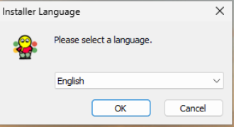
- Choose your preferred language from the dropdown menu
- Available languages include English, German, Spanish, French, and many others
- Click OK to continue
The installer interface will use your selected language for all subsequent steps.
Step 2: Accept the License Agreement
Next, you’ll be presented with the I2P license information. The Easy Install Bundle includes components under various free and open-source licenses.
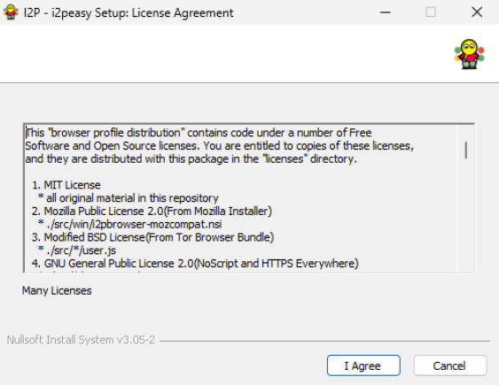
To continue installation:
- Review the license information (optional but recommended)
- Click I Agree to accept the licenses and proceed
- Click Cancel if you do not wish to install
Step 3: Choose Installation Folder
Now you’ll select where to install I2P on your computer.
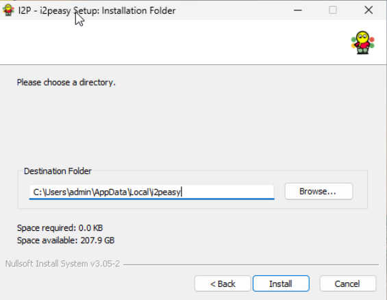
Installation options:
-
Use the default location (recommended)
- Default path:
C:\Users\[YourUsername]\AppData\Local\I2peasy\ - This installs I2P in your user profile directory
- No administrator privileges required for updates
- Default path:
-
Choose a custom location
- Click Browse… to select a different folder
- Useful if you want to install on a different drive
- Make sure you have write permissions to the selected folder
Space requirements:
- The installer shows how much space is required (typically less than 1 GB)
- Verify you have enough free space available on the selected drive
- Click Install to begin the installation process
The installer will now copy all necessary files to your chosen location. This may take a few minutes.
Step 4: Complete Installation and Start I2P
Once the installation finishes, you’ll see the completion screen.
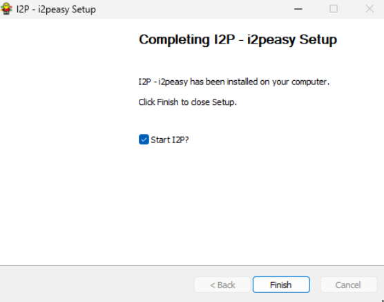
The setup wizard confirms that “I2P - i2peasy has been installed on your computer.”
Important: Make sure the “Start I2P?” checkbox is checked (it should be checked by default).
- Checked (recommended): I2P will start automatically when you click Finish
- Unchecked: You’ll need to manually start I2P later from the Start Menu or desktop shortcut
Click Finish to complete the installation and launch I2P.
What Happens Next
After clicking Finish with “Start I2P?” checked:
- I2P Router starts - The I2P router begins running in the background
- System tray icon appears - Look for the I2P icon in your Windows system tray (bottom-right corner)
- Router console opens - Your default web browser will automatically open to the I2P Router Console (typically at
http://127.0.0.1:7657) - Initial connection - I2P will begin connecting to the network and building tunnels (this can take 5-10 minutes on first launch)
Congratulations! I2P is now installed and running on your Windows computer.
Recommended: Port Forwarding (Optional but Important)
While not strictly required, port forwarding significantly improves your I2P experience by allowing your router to communicate more effectively with other I2P routers. Without port forwarding, you’ll still be able to use I2P, but with reduced performance and contribution to the network.
Why Forward a Port?
- Better connectivity: Allows incoming connections from other I2P routers
- Faster integration: Helps you integrate into the network more quickly
- Network contribution: Makes you a better participant in the I2P network
- Improved performance: Generally results in better tunnel reliability and speed
Finding Your I2P Port
First, you need to identify which port I2P is using (it’s randomly assigned by default).
- Locate the I2P icon in your Windows system tray (notification area) at the bottom-right of your screen
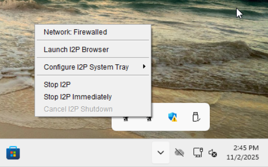
- Right-click the I2P icon to open the context menu
- Click “Launch I2P Browser” to open the I2P router console
The menu also shows useful options like:
- Network: Firewalled - Shows your current network status
- Configure I2P System Tray - Customize tray icon settings
- Stop I2P / Stop I2P Immediately - Shutdown options
Finding Your Port Numbers
Once the I2P browser opens, you need to check which ports I2P is using:
-
Navigate to the network configuration page:
- Go to http://127.0.0.1:7657/confignet in your browser
- Or from the router console sidebar: Configuration → Network
-
Scroll down to the port configuration section
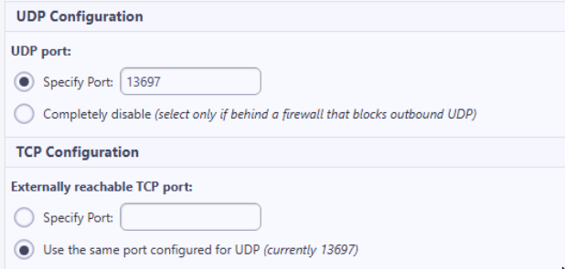
-
Note the port numbers shown:
UDP Configuration:
- UDP port: The port shown here (example:
13697) - By default, this is set to “Specify Port” with a randomly assigned number
TCP Configuration:
- Externally reachable TCP port: Usually set to use the same port as UDP
- In the example above: “Use the same port configured for UDP (currently 13697)”
- UDP port: The port shown here (example:
Important: You need to forward both UDP and TCP on the same port number (in this example, port 13697) in your router/firewall.
How to Forward Your Port
Since every router and firewall is different, we cannot provide universal instructions. However, portforward.com has detailed guides for thousands of router models:
- Visit portforward.com
- Select your router manufacturer and model
- Follow the step-by-step guide to forward your port
- Forward both UDP and TCP protocols on the port number shown in your I2P configuration
General steps (varies by router):
- Log into your router’s admin interface (usually at
192.168.1.1or192.168.0.1) - Find the “Port Forwarding” or “Virtual Servers” section
- Create a new port forwarding rule for your I2P port number
- Set both UDP and TCP protocols
- Point the rule to your computer’s local IP address
- Save the configuration
After forwarding your port, I2P should change from “Network: Firewalled” to “Network: OK” in the system tray menu (this may take a few minutes).
Next Steps
- Wait for integration: Give I2P 5-10 minutes to integrate into the network and build tunnels
- Configure your browser: Use the included Firefox profile for I2P browsing
- Forward your port: See portforward.com for router-specific instructions on how to forward the port I2P is using
- Explore the router console: Learn about I2P’s features, services, and configuration options
- Visit eepsites: Try accessing
.i2pwebsites through the I2P network - Read the documentation: Check out the I2P documentation for more information
Welcome to the I2P network! 🎉
Standard Installation
What is the Standard Installation?
The standard I2P installation is the traditional method of installing I2P on Windows. Unlike the Easy Install Bundle, this method requires you to:
- Install Java separately - Download and install Java Runtime Environment (JRE) before installing I2P
- Run the JAR installer - Use the Java-based graphical installer
- Configure manually - Set up browser configurations yourself (optional)
This method is recommended for:
- Users who already have Java installed
- Advanced users who want more control over the installation
- Users who prefer the traditional installation method
- Systems where the Easy Install Bundle is not compatible
Prerequisites
Before installing I2P, you need to have Java installed on your system.
Java Requirements
- Java Version: Java 8 (1.8) or higher required
- Recommended: Java 11 or later (LTS version)
- Type: Java Runtime Environment (JRE) or Java Development Kit (JDK)
Installing Java
If you don’t already have Java installed, you can download it from several sources:
Option 1: Oracle Java
- Official source: java.com/download
- Most widely used distribution
Option 2: OpenJDK
- Open-source implementation: openjdk.org
- Free and open-source
Option 3: Adoptium (Eclipse Temurin)
- Recommended alternative: adoptium.net
- Free, open-source, and well-maintained LTS releases
To verify Java is installed:
- Open Command Prompt (press
Windows + R, typecmd, press Enter) - Type:
java -version - You should see output showing your Java version
Step 1: Install Java
Before installing I2P, you need to install Java on your system.
-
Choose a Java distribution:
- Oracle Java: java.com/download
- OpenJDK: openjdk.org
- Adoptium: adoptium.net
-
Download the Windows installer for your chosen distribution
-
Run the installer and follow the installation prompts
-
Verify the installation:
- Open Command Prompt
- Type
java -versionand press Enter - Confirm that Java 8 or higher is installed
Once Java is installed, you’re ready to install I2P.
Step 2: Download and Launch the I2P Installer
-
Download the I2P installer:
- Visit the I2P downloads page
- Download the Windows installer (JAR file):
i2pinstall_X.X.X.jar - Save it to a location you can easily find (e.g., Downloads folder)
-
Launch the installer:
- Double-click the downloaded JAR file to launch the installer
- If double-clicking doesn’t work, right-click the file and select “Open with → Java(TM) Platform SE binary”
- Alternatively, open Command Prompt and run:
java -jar i2pinstall_X.X.X.jar
Step 3: Select Your Language
After launching the installer, you’ll see the Language Selection dialog.
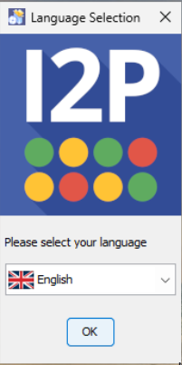
- Select your preferred language from the dropdown menu
- Available languages include English, German, Spanish, French, and many others
- Click OK to continue
The installer will use your selected language for all subsequent steps.
Step 4: Welcome to I2P Installation
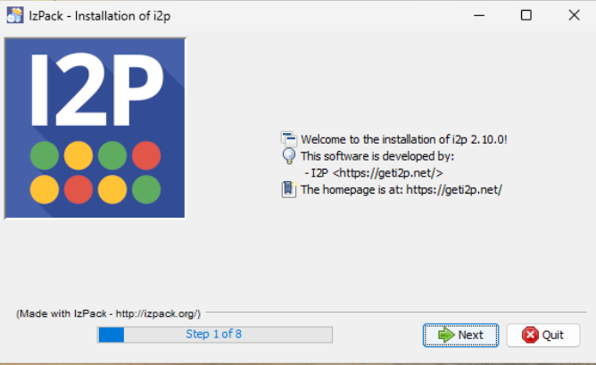
This is Step 1 of 8 in the installation process.
Click Next to continue with the installation.
Step 5: Accept the License Agreement
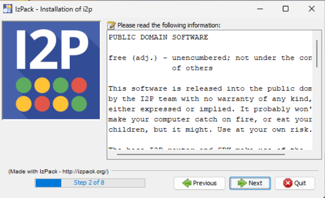
This is Step 2 of 8 in the installation process.
Click Next to accept the license and continue.
Step 6: Select Installation Path
Choose where you want to install I2P on your computer.
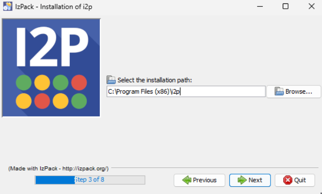
Default installation path: C:\Program Files (x86)\i2p\
You can either:
- Use the default location (recommended)
- Click Browse… to select a different folder
This is Step 3 of 8 in the installation process.
Click Next to continue.
Note: If this is your first time installing I2P, you’ll see a popup confirming directory creation:
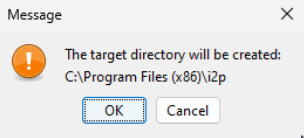
Click OK to create the installation directory.
Step 7: Select Installation Packs
Choose which components to install.
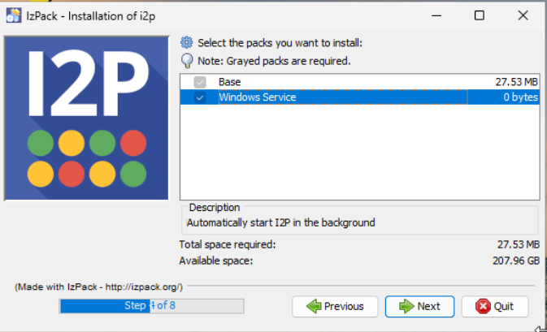
Important: Make sure both packs are selected:
- Base (required) - Core I2P software (27.53 MB)
- Windows Service (recommended) - Automatically start I2P on boot
The Windows Service option ensures I2P starts automatically when your computer boots, so you don’t need to manually start it each time.
This is Step 4 of 8 in the installation process.
Click Next to continue.
Step 8: Installation Progress
The installer will now copy files to your system.
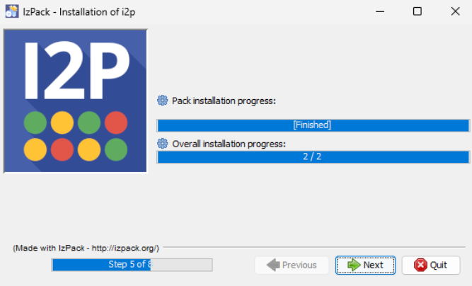
You’ll see two progress bars:
- Pack installation progress: Shows the current pack being installed
- Overall installation progress: Shows overall progress (e.g., “2 / 2”)
This is Step 5 of 8 in the installation process.
Wait for the installation to complete, then click Next.
Step 9: Setup Shortcuts
Configure where you want I2P shortcuts created.
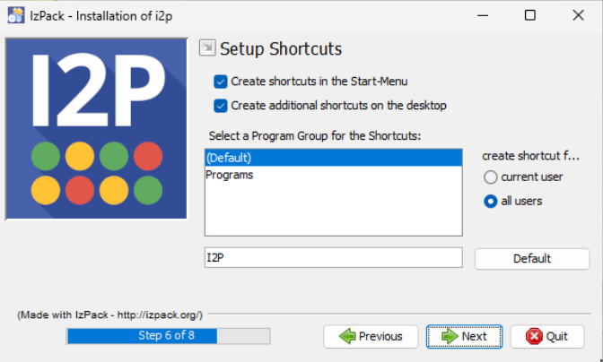
Shortcut options:
- ✓ Create shortcuts in the Start-Menu (recommended)
- ✓ Create additional shortcuts on the desktop (optional)
Program Group: Select or create a folder name for the shortcuts
- Default:
I2P - You can choose an existing program group or create a new one
Create shortcut for:
- Current user - Only you can access the shortcuts
- All users - All users on the system can access the shortcuts (requires administrator privileges)
This is Step 6 of 8 in the installation process.
Click Next to continue.
Step 10: Installation Complete
The installation is now finished!

You’ll see:
- ✓ Installation has completed successfully
- An uninstaller will be created in:
C:\Program Files (x86)\i2p\Uninstaller
This is Step 8 of 8 - the final step in the installation process.
Click Done to finish.
What Happens Next
After clicking Done:
- I2P Router starts - If you installed the Windows Service, I2P will start automatically
- Router console opens - Your default web browser will open to the I2P Router Console at
http://127.0.0.1:7657 - Initial connection - I2P will begin connecting to the network and building tunnels (this can take 5-10 minutes on first launch)
Congratulations! I2P is now installed on your Windows computer.
Starting I2P Manually
If I2P doesn’t start automatically, or if you need to start it manually in the future, you have two options:
Option 1: Start Menu
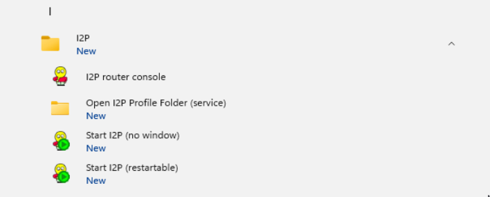
- Open the Windows Start Menu
- Navigate to the I2P folder
- Choose one of the start options:
- I2P router console - Opens the router console in your browser
- Start I2P (no window) - Starts I2P silently in the background
- Start I2P (restartable) - Starts I2P with automatic restart capability
You can also access the Open I2P Profile Folder (service) to view I2P’s configuration files.
Option 2: Windows Services
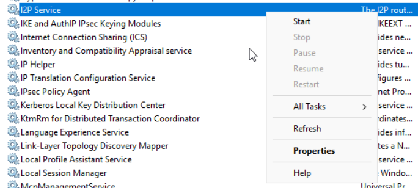
- Press Windows + R to open Run dialog
- Type
services.mscand press Enter - Scroll down to find I2P Service
- Right-click on I2P Service and select:
- Start - Start the I2P service
- Stop - Stop the I2P service
- Restart - Restart the I2P service
- Properties - Configure service settings (startup type, etc.)
The Windows Services method is useful for managing I2P as a background service, especially if you installed it as a Windows Service.
Next Steps
- Wait for integration: Give I2P 5-10 minutes to integrate into the network and build tunnels
- Configure port forwarding: See the port forwarding guide for instructions
- Configure your browser: Set up your web browser to use I2P’s HTTP proxy
- Explore the router console: Learn about I2P’s features, services, and configuration options
- Visit eepsites: Try accessing
.i2pwebsites through the I2P network - Read the documentation: Check out the I2P documentation for more information
Welcome to the I2P network! 🎉